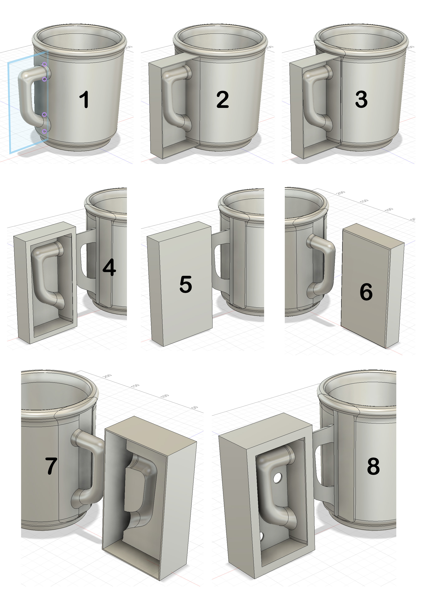
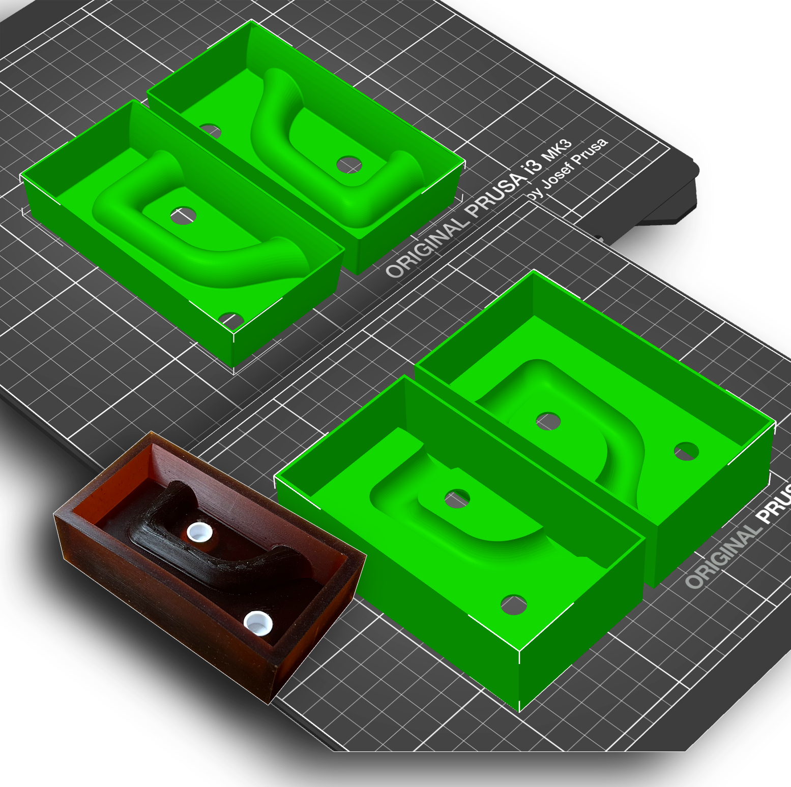
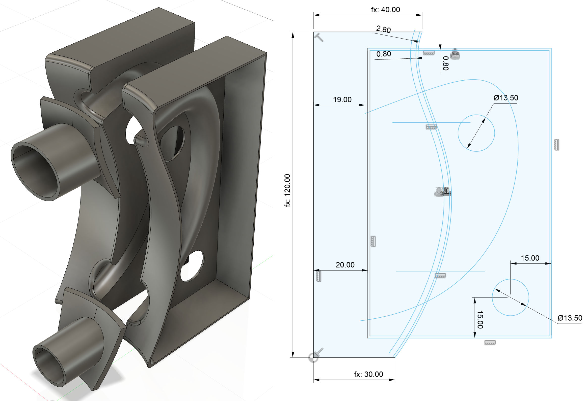
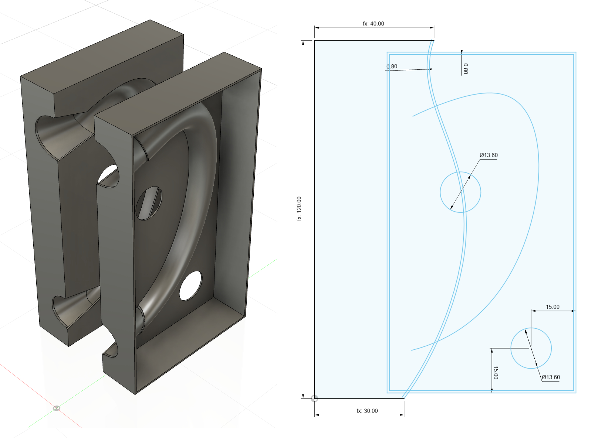

A cereal bowl jigger mold made using 3D printing
Beer Bottle Master Mold via 3D Printing
Better porosity for Brown Sugar Savers
Build a kiln monitoring device
Celebration Project
Coffee Mug Slip Casting Mold via 3D Printing
Comparing the Melt Fluidity of 16 Frits
Cookie Cutting clay with 3D printed cutters
Evaluating a clay's suitability for use in pottery
Make a mold for 4-gallon stackable calciners
Make Your Own Pyrometric Cones
Make your own sieve shaker to process ceramic slurries
Making a high quality ceramic tile
Making a Plaster Table
Making Bricks
Making our own kiln posts using a hand extruder
Medalta Ball Pitcher Slip Casting Mold via 3D Printing
Medalta Jug Master Mold Development
Mold Natches
Mother Nature's Porcelain - Plainsman 3B
Nursery plant pot mold via 3D printing
Pie-Crust Mug-Making Method
Plainsman 3D, Mother Nature's Porcelain/Stoneware
Project to Document a Shimpo Jiggering Attachment
Roll, Cut, Pull, Attach Handle-making Method
Slurry Mixing and Dewatering Your Own Clay Body
Testing a New Load of EP Kaolin
Using milk as a glaze
Mug Handle Casting
Handles are the 'user interface' for your pottery mugs, make them something people will love to hold. Handle-making in pottery may be a place where 3D printing can find a real home in your process. We have developed a flexible CAD design that puts 3D printing of case molds within the reach of almost anyone. It requires so little tooling it can be done in a kitchen using spoon mixing and a paper cup! Multiple cycles of redesign and print are practical to achieve just the right shape and fit. Cast handles can be produced in quantity and stored in a damp box, removing one of the biggest hassles in the production of handled ware. The feel of the handle is the first thing customers notice, even a hobbyist can now turn a "wet noodle" handle into something designed and utilitarian.
While manually pulling handles has its place, casting them has important advantages:
-Consistency of size, shape
-Handle can be made to fit perfectly to mug wall contours
-Precast handle can be stuck on in seconds with just slip
-They can be made off-site by other people
-Ready-to-apply handles can be stored in a damp box
-The procedure of applying them can be relegated to helpers
-The casting process produces no waste clay, everything is used
-Casting clays dry-shrink much less than plastic ones so handles don't crack even if dried quickly
-Because you can mix your own casting slip you have control of the working and firing properties
-Making the handles might be a first step in leading your to making the mugs themselves in holds (either casting or jiggering)
Learning 3D design is difficult but this type of project might be just the motivation you need to get started. We will be providing step-by-step tutorials here. You will make the design and the molds will duplicate it perfectly for each piece. Because only small amounts of material are needed this is a great onramp to learning about clay bodies and making one of your own. That experience may take you some good places!
Making a casting slip that matches your plastic clay fired appearance, thermal expansion and degree of vitrification sounds complicated but not really. I will give you a starting recipe and information on how to fine tune its properties and test it.
Related Information
CAD steps for a 3DP block mold to make a rubber case mold

This picture has its own page with more detail, click here to see it.
The objective was to make a rubber master case mold for the production of working plaster molds. 3DP is a great solution. This drawing was done in Fusion 360.
1: A make a sketch of a box, around the handle, on the XY plane. Offset that outward by 1.2mm (my printer prints 0.4mm wide, three passes give good strength).
2: Extrude to create box 1: The base backward by 1mm and the sides forward by 20mm.
3: Use five sides of the box as cutting planes to slice it out of the mug.
At this point I could print this in PLA filament, pour plaster into and then use a hair drier to peel it off. But let’s make rubber molds instead.
4: Move the box-with-handle away from the mug. Pull the four sides out by 5mm to thicken them.
5 & 6: Create box 2 around the outside of it, as a new body, 1.2mm wider and taller, 1mm more frontward and 1mm less backward.
7: Use box 1 as a cutter to remove material from box 2 and then pull the outer 1.2mm sides 5mm backward.
8: Shell out the back side to 1.2 wall thickness and make two 9.4mm holes (to accommodate natch clips).
To make side 2 mirror-image a new body using the front or back as the reflexion plane. The back side is then filled with PMC-746 rubber to make the block mold. Plaster is poured into that to make each working mold.
3D printing case vs block mug handle molds

This picture has its own page with more detail, click here to see it.
Top: Case molds (for pouring plaster into to make working molds) in the slicer about to be printed.
Bottom: Block molds (actually molds of block molds for pouring rubber into) about to be printed.
The top situation would have been a dream for a potter like me, the simplest possible way to introduce mold-making for slip casting into a process. However, my goal of print-and-pour was not met, this shape is not conducive to the extraction of the plaster without corner breaking. The block mold master (lower left) was made by pouring PMC-746 rubber into these molds. That works extremely well, there will be no problems making plaster molds with this. Notice how well it has preserved the printing artifacts, they look like wood grain. The white embeds enable inserting natches (that I make on the printer also).
CAD drawing of mug handle block mold (spareless)
Available on the Downloads page

This picture has its own page with more detail, click here to see it.
I have long wanted an easy way to make molds for slipcasting handles that mate perfectly to specifically shaped and sized mugs (or pitchers, teapots, etc). These are the answer. These shells print quickly to only 11 grams of PLA filament. They peel away from the set plaster with a heat gun to give fine detail and a perfect fit. These use 3D-printed pour spouts instead of a mold spare (printed separately) and enable cutting the joint surface cleanly and accurately before the handle is removed from the mold (a version of this is also available with spares). This is the product of a long development process. This drawing is available on the downloads page.
Worried about mixing or tuning your own casting slip recipe? We have lots of help on doing that. As motivation, consider the benefits of mass producing handles and store them in a wet box with the attachment slip.
CAD drawing of mug handle mold with traditional spares
Available on the Downloads page

This picture has its own page with more detail, click here to see it.
This mold creates traditional spares (instead of 3D-printed pour spouts on our alternative design). We print these using PLA filament. After extraction from the mold the spares on the clay handles need to be cut away carefully, using a sharp fine-bladed knife.
Worried about mixing or tuning your own casting slip recipe? We have lots of help on doing that. As motivation, consider the benefits of mass-producing handles and storing them in a wet box with the attachment slip - they will be ready to use whenever needed.
Links
| URLs |
https://www.instagram.com/reel/DU8FQ19lAD5
Instagram video: Fast application of slipcast handles in a factory |
 PayPal | No tracking, No ads, No paywall, No transient content! Just organized, concise information constantly updated and improved. Was this helpful? Consider supporting me. |
| By Tony Hansen Follow me on        |  |
Got a Question?
Buy me a coffee and we can talk 

https://digitalfire.com, All Rights Reserved
Privacy Policy